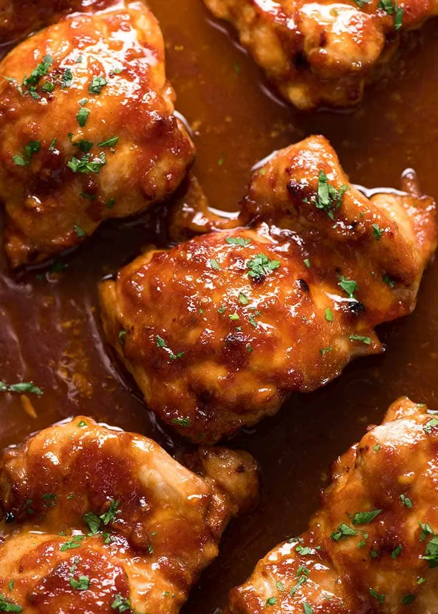

Back to Home
Sticky Chicken Thighs

Description
This totally isn't a rip off from Tasty since we changed the recipe to use chicken thighs instead of drumsticks. Totally.
cough
Either way, super simple, super tasty, (no pun intended), and made a million times easier by using thighs rather than drumsticks. Trust me, it was a nightmare that first time.
Ingredients
- 6 chicken thighs
- 6 cloves of garlic, (... moment of truth, but I will admit to using jarlic. I know fresh garlic is better, but jarlic is cheaper and easier. Just add more than what the recipe asks for.)
- 3 tablespoons of ginger, (fresh or tubed stuff works, it's all good. There's no such thing as shame in Moe's Kitchen)
- 1 red chili
- 3 tablespoons of honey
- 1/2 C of soy sauce
- Sesame seeds
- Green onions
- 1 and 1/2 C of jasmine rice
Steps
- Mix the garlic, ginger, chili, honey and soy sauce in a large bowl.
- Mix the chicken thighs in the sauce, getting it all coated. My wife likes to place a paper towel soaked in the marinade on top of the chicken so whatever chicken is exposed to air is still getting flavor as opposed to soaking the marinade like water to a plant in a flower pot, (lol)
- Let the chicken marinate for at least 6 hours, but preferrably overnight.
- Once ready to cook, get the rice going and heat up some oil in a large pan to fry the chicken on both sides until they're golden. Mix regularly so the marinade doensn't burn.
- Remove the chicken from the pan and pour the marinade in, bringing it to a boil.
- Let the marinade boil and stir until it thickens into a sauce, then put the chicken back in.
- Let the chicken cook in the sauce, flipping it over so they get coated in it and to make sure it's fully cooked through.
- Once done, serve on a plate with the rice and garnish with sesame seeds and green onions!